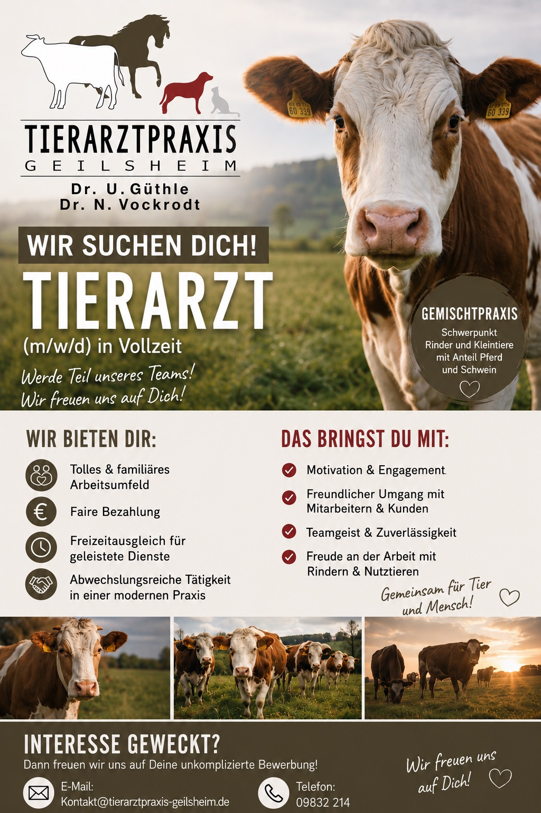

Karriere bei der Tierarztpraxis Geilsheim
Werde Teil unseres engagierten Teams! Wir suchen motivierte Veterinäre und Fachkräfte, die unsere Leidenschaft für Tiermedizin teilen.
Ob Kleintiere, Großtiere oder Pferde – bei uns findest Du eine vielfältige und anspruchsvolle Tätigkeit in einem modernen, kollegialen Umfeld. Wir bieten attraktive Arbeitsbedingungen und die Möglichkeit, Deine Fähigkeiten weiterzuentwickeln.
Aktuelle Stellenangebote
Tierarzt (m/w/d)
Vollzeit
Standort
Geilsheim 200a, 91717 Wassertrüdingen
Anforderungen
Abgeschlossenes Veterinärmedizinstudium
Das bringst du mit
- Motivation und Engagement
- Freundlicher Umgang mit Mitarbeitern und Kunden
- Teamgeist und Zuverlässigkeit
- Freude an der Arbeit mit Großtieren
- Eine gute Portion Humor
Wir bieten
- Tolles und familiäres Arbeitsumfeld
- Faire Bezahlung
- Freizeitausgleich für geleistete Dienste
- Abwechslungsreiche Tätigkeit in einer modernen Praxis
- Schlechte Witze garantiert
- Spontane musikalische Einlagen möglich
- Kaffee in allen erdenklichen Variationen
- Feierabendgetränke teilweise auch ungesund
